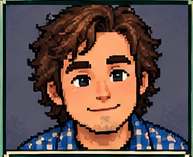

Professor Burns
Good morning. Before we start naming theories, I want you to look around. What do you notice?
Click/tap to move · Click Professor Burns to talk · D = collision debug

Good morning. Before we start naming theories, I want you to look around. What do you notice?